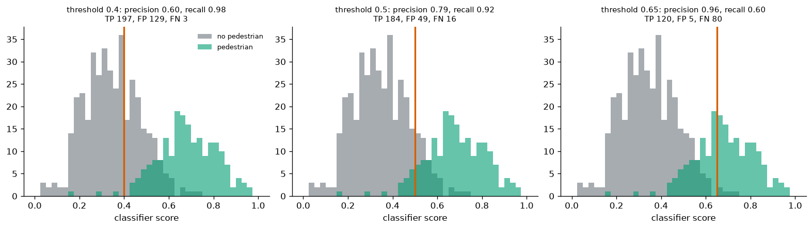
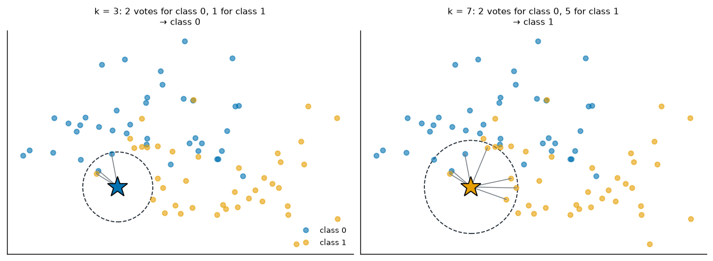
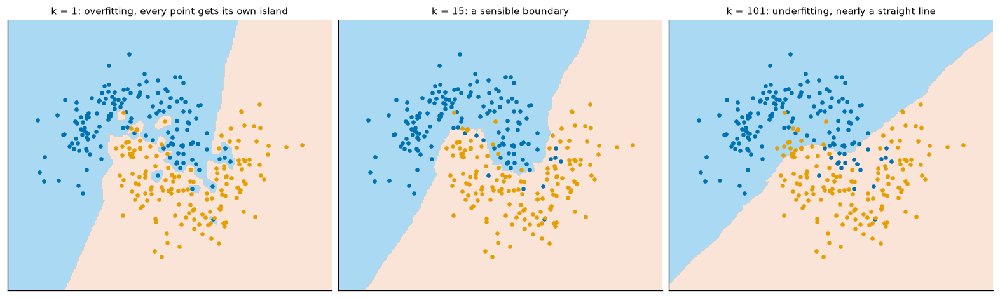
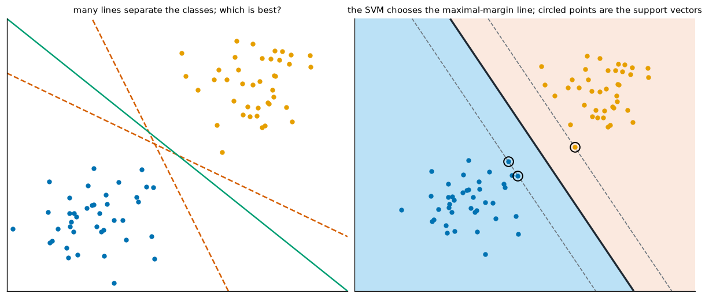
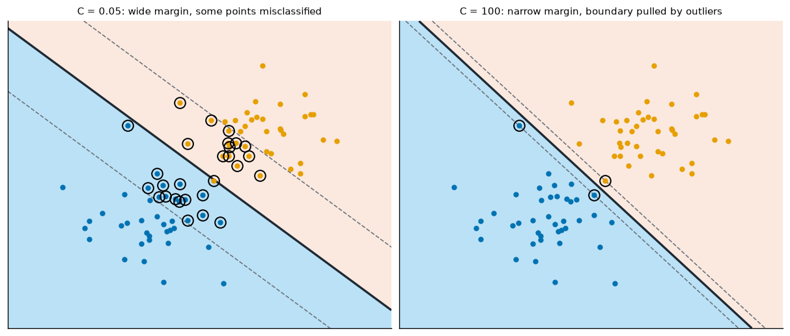
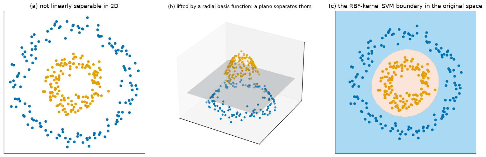
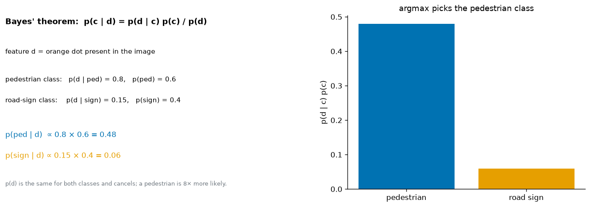
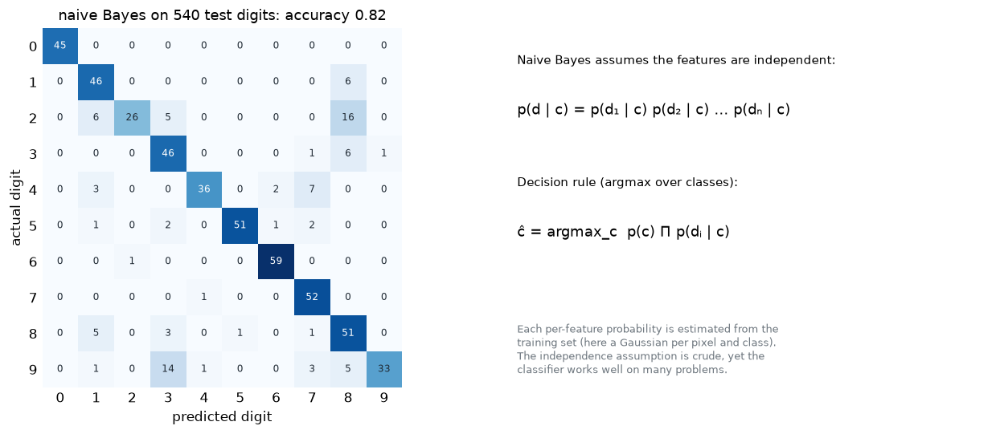

Lesson 04.03
Classifiers
Classification metrics and the precision-recall trade-off, then three classifiers used in vision: k-nearest neighbours, the support vector machine with soft margins and the kernel trick, and the naive Bayes classifier built on Bayes' theorem.
Learning outcomes
After this lesson you should be able to:
- compute accuracy, precision and recall and explain the trade-off between the last two;
- describe the k-nearest-neighbours classifier and how k controls its complexity;
- explain the maximal-margin idea of the SVM, the role of C in the soft margin, and the kernel trick;
- apply Bayes' theorem to a simple classification problem and describe the naive Bayes classifier.
Classification metrics
A classifier maps input features to labels and can be interpreted as a decision boundary between classes. To judge how well a trained classifier performs we use the confusion matrix and the three metrics of the previous lesson. Consider pedestrian detection: a false negative, a missed pedestrian, is dangerous; a false positive, braking for nothing, is merely annoying. In practice a classifier has neither zero false positives nor zero false negatives, and for any classifier there is a trade-off: raising precision tends to lower recall and vice versa. High precision with low recall means confident positive predictions but many missed pedestrians, potentially dangerous in a braking system; low precision with high recall means many false alarms but few misses.

Worked example 1: Confusion Matrix Metrics
The following $3 \times 3$ confusion matrix is given for classes A, B, C (rows = true class, columns = predicted class):
| Pred A | Pred B | Pred C | |
|---|---|---|---|
| True A | 22 | 10 | 7 |
| True B | 11 | 13 | 22 |
| True C | 14 | 6 | 12 |
For each class compute the Accuracy ($Acc_i$), Precision ($Pre_i$), and Recall ($Rec_i$) using the one-vs-rest approach. Give answers rounded to 2 d.p. as a $3 \times 3$ matrix $[[Acc_A, Pre_A, Rec_A],[Acc_B, Pre_B, Rec_B],[Acc_C, Pre_C, Rec_C]]$.
Show the solution
Total samples: $N = 117$
Class A (one-vs-rest):
- $TP = 22$, $FP = 25$, $FN = 17$, $TN = 53$
- $Acc_A = (TP+TN)/N = (22+53)/117 = 0.64$
- $Pre_A = TP/(TP+FP) = 22/(22+25) = 0.47$
- $Rec_A = TP/(TP+FN) = 22/(22+17) = 0.56$
Class B (one-vs-rest):
- $TP = 13$, $FP = 16$, $FN = 33$, $TN = 55$
- $Acc_B = (TP+TN)/N = (13+55)/117 = 0.58$
- $Pre_B = TP/(TP+FP) = 13/(13+16) = 0.45$
- $Rec_B = TP/(TP+FN) = 13/(13+33) = 0.28$
Class C (one-vs-rest):
- $TP = 12$, $FP = 29$, $FN = 20$, $TN = 56$
- $Acc_C = (TP+TN)/N = (12+56)/117 = 0.58$
- $Pre_C = TP/(TP+FP) = 12/(12+29) = 0.29$
- $Rec_C = TP/(TP+FN) = 12/(12+20) = 0.38$
Answer matrix:
$$\begin{pmatrix}0.64 & 0.47 & 0.56 \\ 0.58 & 0.45 & 0.28 \\ 0.58 & 0.29 & 0.38\end{pmatrix}$$
k-nearest neighbours
The k-nearest-neighbours classifier is the simplest available. There is no real learning: the algorithm keeps a record of the labelled training data and has no internal parameters, though it is still supervised because it needs the labels. To classify a test point it computes the distance, usually Euclidean, to every training point, takes the k closest, and assigns the majority class among them; k is usually odd. A weighted variant lets distant neighbours count less, so that they do not dominate when k is large.

Complexity of k-NN
The choice of k sets the classifier's complexity. A small k lets the test point take the label of its immediate neighbours, giving overfitting; a large k lets many points vote and tends to underfit. Because k-NN is so simple, several values can be trialled and the error checked on the validation set to find the best generalisation.

The support vector machine
The support vector machine (SVM) is widely used in machine and computer vision. In its basic form it is a linear binary classifier: in two dimensions the decision boundary is a straight line, and many lines separate two well-separated classes, some good and some bad. The SVM chooses the maximal-margin hyperplane, the line that maximises the distance to the nearest feature vectors of both classes. Those nearest vectors are the support vectors. The derivation and training of the SVM are outside the scope of this module.

The soft margin
Real training data overlap because of outliers and noise. The soft-margin SVM tolerates some misclassified points and still fits a good boundary; most implementations include it. Training now balances two competing objectives, maximising the margin and minimising the number of misclassified training points, and a user-chosen parameter C sets the weighting. A large C prioritises correct classification, so the margin shrinks and outliers strongly influence the boundary; a small C prioritises a wide margin and tolerates misclassifications. C is found by trial over several training runs.

The kernel trick
Being linear, the SVM cannot separate data whose true boundary is a circle or an ellipse. Practical implementations use the kernel trick: the data are transformed by adding a dimension so that they become separable. With the radial basis function (RBF), a function similar to the Gaussian, two-dimensional concentric classes are lifted into three dimensions where a plane separates them. The RBF is the default kernel in most implementations, and for the high-dimensional feature vectors of computer vision it is often necessary for good classification.

The naive Bayes classifier
The naive Bayes classifier works differently: rather than fitting a decision boundary, it uses statistics extracted from the training set to make predictions, though it still learns from labelled data. It rests on Bayes' theorem,
$$p(c_j \mid d) = \frac{p(d \mid c_j)\, p(c_j)}{p(d)}, \tag{1}$$
where $p(c_j \mid d)$ is the probability that an image belongs to class $c_j$ given that it contains feature $d$, the quantity we want; $p(d \mid c_j)$ is the probability that an image of class $c_j$ contains the feature; $p(c_j)$ is the fraction of the dataset in class $c_j$; and $p(d)$ is the probability of the feature, which is the same for every class and acts only as a scaling factor, so it need not be computed.
A numerical example
Suppose we distinguish pedestrians from road signs by the presence of an orange dot. From the dataset, 80% of pedestrian images and 15% of road-sign images contain the dot, and the dataset is 60% pedestrians and 40% road signs. For a test image containing the dot,
$$p(\text{ped} \mid d) \propto 0.8 \times 0.6 = 0.48, \qquad p(\text{sign} \mid d) \propto 0.15 \times 0.4 = 0.06,$$
so a pedestrian is eight times more likely.

The classifier
Real feature vectors have many dimensions. Naive Bayes makes the simplifying assumption that the individual features are independent, so that
$$p(d \mid c_j) = p(d_1 \mid c_j)\, p(d_2 \mid c_j) \cdots p(d_n \mid c_j). \tag{2}$$
The assumption is a big one, yet the classifier performs well in many applications. The decision rule is the obvious one: evaluate the probability of every class and choose the largest,
$$\hat c = \arg\max_j\; p(c_j) \prod_i p(d_i \mid c_j), \tag{3}$$
which is what the example did. Naive Bayes is naturally a multi-class model.

Check your understanding
1. For a pedestrian braking system, which situation is most dangerous?
Low recall means many pedestrians are missed (false negatives).
2. A k-NN classifier with k = 1
Small k gives a highly complex boundary; large k averages over many points and underfits.
3. The support vectors of an SVM are
The maximal-margin hyperplane depends only on the nearest points of each class.
4. In a soft-margin SVM, a very large value of C
Large C weights misclassification heavily, so the margin shrinks to accommodate every point.
5. The kernel trick makes non-linearly separable data separable by
With the radial basis function, concentric 2D classes become separable by a plane in 3D.
6. In the pedestrian / road-sign example, why can p(d) be ignored?
Bayes' theorem's denominator is a common scaling factor; argmax over classes is unaffected.
7. The 'naive' assumption in naive Bayes is that
Independence lets the class likelihood factorise into a product of per-feature probabilities.
Practice questions
Question types from the CE6021 question bank that cover this lesson:
con_mat.
Image credits
- Optical Recognition of Handwritten Digits (UCI ML Repository), E. Alpaydin and C. Kaynak, CC BY 4.0
Other figures are generated from synthetic data by the lesson engines.